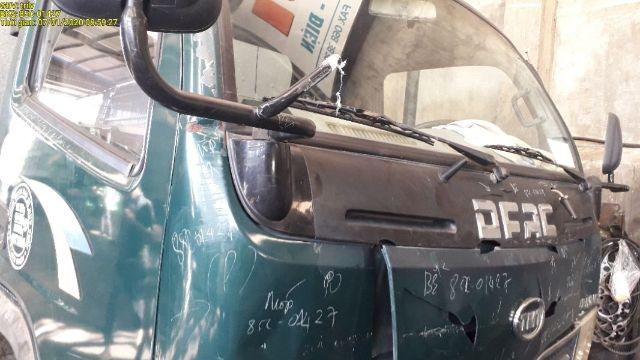
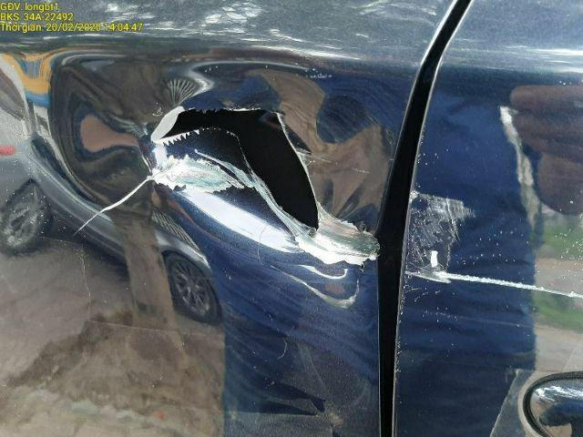
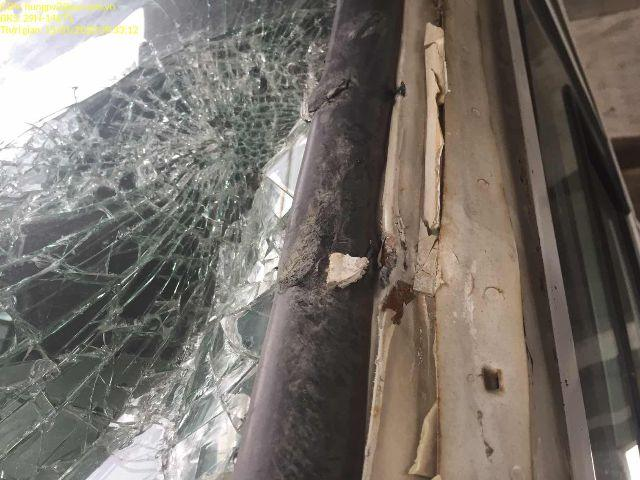
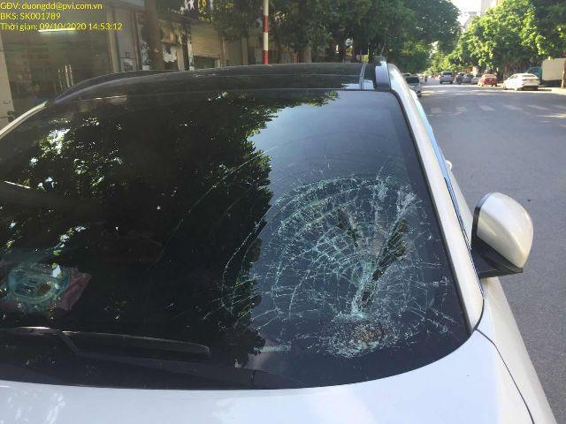
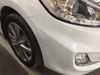
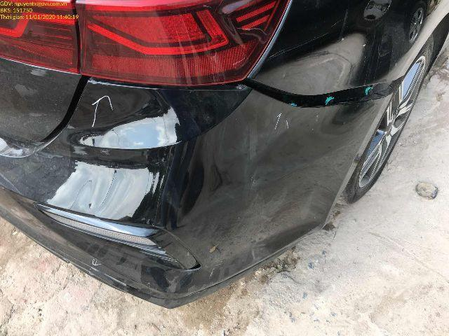
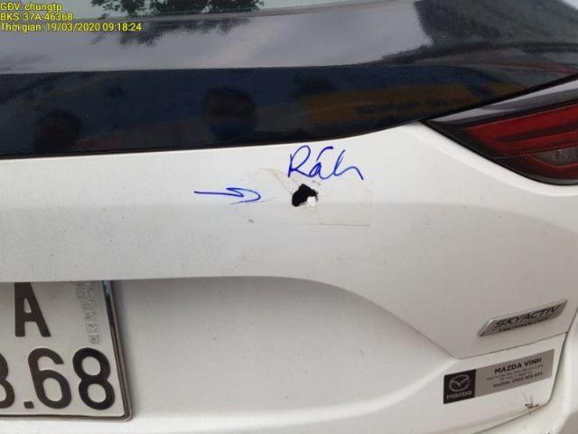
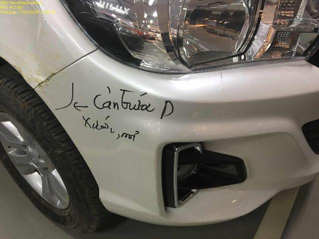

ÖzetSummary
Çekicin uygulamasında ve AI Lab’de cihaz üzerinde çalışan iki hasar modelini (1000 fotoğraflık yeni bir test setinde) hata ayıklamadan geçirdik ve Hugging Face’teki 5 hasar modeliyle aynı koşullarda karşılaştırdık. Tüm modeller aynı 2 çekirdekli CPU’da çalıştı.We debugged the two on-device damage models used in the Çekicin app and AI Lab on a new 1000-photo test set, and compared them with 5 car-damage models from Hugging Face under identical conditions. Every model ran on the same 2-core CPU.
Fotoğraflar üzerinde sonuçlarResults on the photos
Yeni hasar modelinin (YOLO11m, int8, AI Lab ayarları) test fotoğraflarındaki gerçek çıktıları. Kesikli beyaz = uzmanın işaretlediği gerçek hasar, renkli = model. Rastgele seçilmiş 48 fotoğrafın tamamı, model seçimi (8 model) ve tarayıcıda canlı test için: Modeli test et →Real outputs of the new damage model (YOLO11m, int8, AI Lab settings) on test photos. Dashed white = true damage marked by annotators, coloured = model. For all 48 randomly drawn photos, a model switch (8 models) and a live in-browser test: Test the model →

✗ ÇatlakCrack✗ GöçükDent✓ ÇizikScratch
✗ ÇatlakCrack✓ GöçükDent✗ ÇizikScratch+ Cam kırığıGlass shatter
✓ Cam kırığıGlass shatter✗ ÇizikScratch
✓ Cam kırığıGlass shatter
✗ GöçükDent+ ÇizikScratch
✓ GöçükDent✓ ÇizikScratch+ ÇatlakCrack
✗ ÇatlakCrack✓ ÇizikScratch
✗ GöçükDent✓ ÇizikScratch+ ÇatlakCrackFotoğraflar: AutoDamageIQ (VehiDE kaynaklı), CC-BY-4.0. Sağlam araç fotoğrafları lisans gereği gösterilmiyor.Photos: AutoDamageIQ (VehiDE origin), CC-BY-4.0. Intact-car photos are not shown for licence reasons.
Karar: model değişmeli mi? Evet — değiştirildi (2026-10-16)Decision: should the model change? Yes — changed (2026-10-16)
Karşılaştırmada sağlam araçta en az yanlış alarm veren model shanexf/car-damage-yolo11m-ft oldu: CarDD ile aynı 6 sınıf, ama sağlam araç fotoğraflarıyla da eğitilmiş. Dört seçeneği dürüst 2-fold ile (eşik bir yarıda seçilip diğer yarıda ölçülerek, yanlış alarm ≤ %20 koşuluyla) ve tarayıcıdaki gerçek int8 dosyasıyla ölçtük.In the comparison, shanexf/car-damage-yolo11m-ft had by far the fewest false alarms on intact cars: the same 6 classes as CarDD, but also trained on photos of intact cars. We measured four options with an honest 2-fold (threshold picked on one half, scored on the other, with false alarms ≤ 20%) using the real int8 file that the browser loads.
| Seçenek (yalnız hasar modeli)Option (damage model alone) | Macro-F1 | YakalamaRecall | Yanlış alarmFalse alarm | .pt: F1 / y.a..pt: F1 / f.a. |
|---|---|---|---|---|
| A: CarDD (eski, eşiklerle)A: CarDD (old, with floors) | 0.524 | 80% | 28% | 0.524 / 28% |
| B: YOLO11m-neg ile değiştirB: replace with YOLO11m-neg | 0.540 | 84% | 19% | 0.575 / 18% |
| C: CarDD, YOLO11m-neg onaylarsaC: CarDD gated by YOLO11m-neg | 0.560 | 82% | 18% | 0.562 / 16% |
| D: ikisinin birleşimiD: union of both | 0.562 | 86% | 35% | 0.575 / 31% |
Tablo değerleri 2-fold (ayrılmış yarı) ortalamasıdır. int8 ile C, B’den biraz daha iyi; ama iki büyük modeli birlikte gerektirir (CarDD 12 MB + YOLO11m 21 MB, ~3 sn). Lab’de seçilen kural (aşağıda) benzer yanlış alarm oranında (%21) daha yüksek F1 ve yakalama verir ve parça adını da korur.Values are 2-fold held-out means. With int8, C scores slightly better than B, but it needs two large models at once (CarDD 12 MB + YOLO11m 21 MB, ~3 s). The rule shipped in the lab (below) gives higher F1 and recall at a similar false-alarm rate (21%), and keeps the part name.
Kullanıcının gördüğü: AI Lab “İkisi birlikte” modu (1000 fotoğraf)What the user sees: AI Lab “Both” mode (1000 photos)
Asıl büyük sorun parça modeliydi: tek başına sağlam araçların yarısında hasar buluyor. Yeni kuralda parça modeli yalnızca parça adını (maliyet için) verir; hasar olup olmadığına YOLO11m-neg karar verir.The biggest problem was the part model: on its own it reports damage on about half of intact cars. With the new rule the part model only supplies the part name (for the cost estimate); YOLO11m-neg decides whether there is damage at all.
| Lab moduLab mode | Macro-F1 | YakalamaRecall | Yanlış alarmFalse alarm | İndirme · WASM süresiDownload · WASM time |
|---|---|---|---|---|
| Önce: parça modeli + CarDD (≥0,40)Before: part model + CarDD (≥0.40) | 0.519 | 86% | 54% | 22 MB · ~1,5 sn22 MB · ~1.5 s |
| Şimdi: parça modeli, YOLO11m-neg onaylarsa (int8, 0,10)Now: part model, confirmed by YOLO11m-neg (int8, 0.10) | 0.588 | 86% | 21% | 31 MB · ~2,2 sn31 MB · ~2.2 s |
| Aynı kural, fp16w (?hq=1)Same rule, fp16w (?hq=1) | 0.595 | 84% | 17% | 51 MB · ~3,5 sn51 MB · ~3.5 s |
| Aynı kural, orijinal .pt (referans)Same rule, original .pt (reference) | 0.603 | 86% | 18% | — |
Neden int8? İndirme yarıya iner ve tarayıcıda (WASM, tek iş parçacığı) 1,7 kat hızlıdır; fp16w biraz daha doğrudur ve ?hq=1 ile açılır. 0,10 eşiği bu test setinde seçildi; 2-fold sütunları bunun etkisini gösterir. Hasarlı fotoğrafların hepsi tek kaynaktan (VehiDE); gerçek müşteri fotoğrafları daha zor olacaktır. Lisans: ağırlıklar shanexf’e ait ve lisans etiketi yok; YOLO11 türevi olduğu için AGPL-3.0, CarDD verisi nedeniyle yalnızca ticari olmayan kullanım.Why int8? Half the download and 1.7× faster in the browser (WASM, single thread); fp16w is slightly more accurate and is used with ?hq=1. The 0.10 threshold was chosen on this test set; the 2-fold columns show the effect of that. All damaged photos come from one source (VehiDE); real customer photos will be harder. Licence: weights by shanexf with no licence tag; as a YOLO11 derivative it is AGPL-3.0, and CarDD training data means non-commercial use only. · 🤗 cekicin-damage-yolo11m-neg-onnx · AI Lab
Hata ayıklama bulgularıDebugging findings
Düzeltmenin etkisi (CarDD, 1000 fotoğraf)Effect of the fix (CarDD, 1000 photos)
| AyarSetting | Macro-F1 | YakalamaRecall | Yanlış alarmFalse alarm | Far y.a.Lamp f.a. | Lastik y.a.Tyre f.a. | Zor set: farHard set: lamps | Zor set: lastikHard set: tyres |
|---|---|---|---|---|---|---|---|
| Varsayılan: tüm sınıflar 0,25Default: all classes 0.25 | 0.524 | 82% | 41% | 19/112 | 8/112 | 35/41 | 14/14 |
| Far 0,6 · lastik 0,6 (yayınlandı)Lamp 0.6 · tyre 0.6 (shipped) | 0.524 | 80% | 28% | 9/112 | 1/112 | 32/41 | 14/14 |
| Far 0,8 · lastik 0,5Lamp 0.8 · tyre 0.5 | 0.524 | 78% | 25% | 2/112 | 2/112 | 25/41 | 14/14 |
| Tüm sınıflar sıkı (sınıf başına ≤%3 yanlış alarm, 2-fold)All classes strict (≤3% false alarms per class, 2-fold) | 0.404 | 53% | 14% | – | – | – | – |
Model varyantları (aynı 1000 fotoğraf, eşik 0,25)Model variants (same 1000 photos, threshold 0.25)
| VaryantVariant | Macro-F1 | mAP | YakalamaRecall | Yanlış alarmFalse alarm | ms |
|---|---|---|---|---|---|
| CarDD orijinal PyTorch .pt (Ultralytics, referans)CarDD original PyTorch .pt (Ultralytics, reference) | 0.535 | 0.495 | 82% | 42% | 255 |
| CarDD fp32 ONNX + bizim JS hattımızCarDD fp32 ONNX + our JS pipeline | 0.534 | 0.489 | 82% | 35% | 167 |
| CarDD int8 ONNX (yayındaki, 12 MB)CarDD int8 ONNX (deployed, 12 MB) | 0.524 | 0.477 | 82% | 41% | 243 |
| CarDD int8 per-channel (12 MB)CarDD int8 per-channel (12 MB) | 0.524 | 0.477 | 82% | 41% | 241 |
| CarDD int8, başlık fp32 (20 MB)CarDD int8, fp32 head (20 MB) | 0.526 | 0.477 | 82% | 42% | 210 |
| CarDD fp16 ağırlık / fp32 hesap (24 MB) — yeniCarDD fp16 weights / fp32 compute (24 MB) — new | 0.533 | 0.488 | 82% | 35% | 165 |
| Parça modeli orijinal .pt (referans)Parts model original .pt (reference) | 0.245 | 0.204 | 71% | 53% | 69 |
| Parça modeli ONNX + JS hattı (yayındaki)Parts model ONNX + JS pipeline (deployed) | 0.248 | 0.200 | 70% | 46% | 45 |
Giriş çözünürlüğü (200 fotoğraflık alt küme, eşik 0,25)Input resolution (200-photo subset, threshold 0.25)
| ÇalıştırmaRun | Macro-F1 | YakalamaRecall | Yanlış alarmFalse alarm | ms |
|---|---|---|---|---|
| CarDD int8 · 640 px · PIL/browser | 0.565 | 83% | 59% | 247 |
| CarDD int8 · 640 px · OpenCV linear | 0.565 | 83% | 59% | 245 |
| CarDD int8 · 640 px · OpenCV area | 0.557 | 83% | 64% | 250 |
| CarDD fp32 · 640 px · PIL/browser | 0.565 | 83% | 46% | 173 |
| CarDD .pt · 640 px · Ultralytics | 0.584 | 82% | 46% | 246 |
| CarDD .pt · 1024 px · Ultralytics | 0.504 | 78% | 46% | 657 |
| CarDD int8 · 832 px · PIL/browser | 0.520 | 80% | 50% | 409 |
| CarDD int8 · 832 px · OpenCV linear | 0.510 | 81% | 46% | 415 |
| CarDD int8 · 1024 px · PIL/browser | 0.493 | 78% | 46% | 620 |
| CarDD int8 · 1024 px · OpenCV linear | 0.490 | 76% | 55% | 640 |
Karşılaştırma: Çekicin ve Hugging Face modelleriComparison: Çekicin vs Hugging Face models
Görüntü düzeyinde: fotoğrafta o hasar türü var mı? Macro-F1 = çatlak, göçük, cam, çizik F1 ortalaması (eşik 0,25; ViT için 0,5). mAP ve AUROC eşikten bağımsızdır. Box AP50 = kutuların etiketle örtüşmesi (sınıftan bağımsız).Image level: is that damage type in the photo? Macro-F1 = mean F1 over crack, dent, glass, scratch (threshold 0.25; 0.5 for the ViT). mAP and AUROC are threshold-free. Box AP50 = box overlap with the labels (class-agnostic).
| ModelModel | Macro-F1 [95% CI] | Görüntü mAPImage mAP | Hasar yakalamaDamage recall | Sağlam araçta yanlış alarmFalse alarm on intact cars | AUROC | Box AP50 | ms/fotophoto |
|---|---|---|---|---|---|---|---|
| ÇekicinÇekicin Çekicin CarDD (YOLOv8s-seg, int8 ONNX) | 0.52 [0.50–0.55] | 0.48 | 82% | 41% [32%–51%] | 0.78 | 0.12 | 243 |
| HF shanexf/car-damage-yolo11m-ft | 0.51 [0.49–0.54] | 0.45 | 76% | 14% [9%–21%] | 0.89 | 0.12 | 453 |
| HF beingamit99/car_damage_detection | 0.46 [0.44–0.48] | 0.39 | 98% | 95% [91%–98%] | 0.82 | – | 169 |
| ÇekicinÇekicin Çekicin parts (YOLO11n, ONNX) | 0.25 [0.23–0.27] | 0.20 | 70% | 46% [38%–55%] | 0.67 | 0.03 | 45 |
| HF tatar01230/car-damage-yolo11n | 0.18 [0.16–0.20] | 0.15 | 78% | 52% [42%–62%] | 0.72 | 0.03 | 34 |
Hasar türüne göre F1F1 per damage type
| Model | GöçükDent | ÇizikScratch | ÇatlakCrack | CamGlass | Macro |
|---|---|---|---|---|---|
| Çekicin CarDD (YOLOv8s-seg, int8 ONNX) | 0.45 | 0.68 | 0.32 | 0.64 | 0.52 |
| shanexf/car-damage-yolo11m-ft | 0.42 | 0.68 | 0.30 | 0.66 | 0.51 |
| beingamit99/car_damage_detection | 0.32 | 0.70 | 0.12 | 0.70 | 0.46 |
| Çekicin parts (YOLO11n, ONNX) | 0.53 | 0.00 | 0.00 | 0.46 | 0.25 |
| tatar01230/car-damage-yolo11n | 0.54 | 0.00 | 0.00 | 0.17 | 0.18 |
Naiscorp Mask R-CNN: aynı 300 fotoğraflık alt küme (2 GB RAM’e sığmadığı için 1000’in tamamı çalıştırılamadı)Naiscorp Mask R-CNN: same 300-photo subset (the 764 MB model does not fit 1000 runs in 2 GB RAM)
| ModelModel | Macro-F1 [95% CI] | Görüntü mAPImage mAP | Hasar yakalamaDamage recall | Sağlam araçta yanlış alarmFalse alarm on intact cars | AUROC | Box AP50 | ms/fotophoto |
|---|---|---|---|---|---|---|---|
| HF Naiscorp/car-damage-detection | 0.64 [0.59–0.68] | 0.51 | 83% | 12% [3%–24%] | 0.89 | 0.24 | 4364 |
| ÇekicinÇekicin Çekicin CarDD (YOLOv8s-seg, int8 ONNX) | 0.53 [0.47–0.57] | 0.50 | 84% | 45% [30%–61%] | 0.80 | 0.14 | 243 |
| HF shanexf/car-damage-yolo11m-ft | 0.53 [0.49–0.57] | 0.48 | 79% | 9% [0%–18%] | 0.90 | 0.12 | 453 |
Yakalama ve yanlış alarm dengesi (eşik 0,05 → 0,8; nokta = varsayılan eşik)Recall vs false-alarm trade-off (threshold 0.05 → 0.8; dot = default threshold)
Sol üst köşeye yakın olan daha iyidir.Closer to the top-left corner is better.
SonuçVerdict
- shanexf YOLO11m sağlam araç negatifleriyle eğitildiği için yanlış alarmda açık ara en iyisi (14%, AUROC 0.89); hasar türü F1’i bizim CarDD ile aynı düzeyde (0.51 / 0.52). Bedeli: 20 M parametre, CPU’da ~2× yavaş.shanexf YOLO11m is clearly best on false alarms (14%, AUROC 0.89) because it was trained with intact-car negatives; its damage-type F1 is on par with our CarDD (0.51 vs 0.52). Cost: 20 M parameters, ~2× slower on CPU.
- Bizim CarDD hasar türünde en iyi ya da eşit; zayıf yanı sağlam araçlar. Düzeltmeyle yanlış alarm 41% → 28%.Our CarDD is best or tied on damage type; its weakness is intact cars. The fix brings false alarms from 41% to 28%.
- Naiscorp Mask R-CNN 300 fotoğraflık alt kümede en yüksek hasar türü F1’ine sahip (0.64; aynı fotoğraflarda bizim CarDD 0.53, shanexf 0.53) ve yanlış alarmı düşük (12%). Ancak: 764 MB, CPU’da 4.4 sn/foto, tescilli lisans ve Vietnam sigorta fotoğraflarıyla eğitildiği için test setiyle aynı alanda (olası örtüşme). Telefonda çalışamaz; sunucu tarafı bir seçenek olarak değerlendirilebilir.Naiscorp Mask R-CNN has the highest damage-type F1 on the 300-photo subset (0.64; on the same photos our CarDD 0.53, shanexf 0.53) and few false alarms (12%). But: 764 MB, 4.4 s/photo on CPU, proprietary licence, and trained on Vietnamese insurance photos, i.e. the same domain as this test set (possible overlap). It cannot run on a phone; it is a server-side option at most.
- ViT sınıflandırıcı (beingamit99) her fotoğrafa bir hasar etiketi verir, “hasar yok” seçeneği yoktur: sağlam araçların %95’inde alarm. Konum (kutu) da vermez.The ViT classifier (beingamit99) always outputs a damage label and has no “no damage” option: alarms on 95% of intact cars. It gives no location either.
- Parça modelleri (bizim YOLO11n ve tatar01230) çizik ve çatlak sınıfına sahip değil; parça konumu için faydalı, hasar türü için CarDD gerekir.Part models (our YOLO11n and tatar01230) have no scratch or crack class; useful for part location, CarDD is needed for damage type.
- nezahatkorkmaz karşılaştırılamaz: model kartı “nesne tespiti” diyor ama dosya 128 px’lik 3 sınıflı (hafif/orta/ağır) bir sınıflandırıcı; sağlam araca da bir şiddet etiketi verir.nezahatkorkmaz is not comparable: the card says “object detection” but the file is a 128 px 3-class (minor/moderate/severe) classifier; it gives intact cars a severity label too.
Modeller nasıl eğitildi?How was each model trained?
Kaynak: Hugging Face model kartları ve her .pt dosyasının içine kaydedilmiş eğitim ayarları (train_args).Source: the Hugging Face model cards and the training arguments stored inside each .pt checkpoint (train_args).
⭐ Çekicin CarDD (YOLOv8s-seg, int8 ONNX)
browser / app (on-device)
⭐ Çekicin parts (YOLO11n, ONNX)
browser / app (on-device)
shanexf/car-damage-yolo11m-ft
server (20 M params)
tatar01230/car-damage-yolo11n
on-device capable
Naiscorp/car-damage-detection
server (764 MB ONNX)
beingamit99/car_damage_detection
server
nezahatkorkmaz/car-damage-level-detection-yolov8
—
Test seti ve sınırlamalarTest set and limitations
- 888 hasarlı fotoğraf: AutoDamageIQ val (VehiDE kaynaklı, CC-BY-4.0), çatlak ve cam ≥200’er olacak şekilde tabakalı seçildi (çizik 564, göçük 412, çatlak 200, cam 200). Bu görsellerin hiçbiri CarDD’den değil; yani CarDD ile eğitilen modeller için alan dışı (out-of-domain) bir test.888 damaged photos: AutoDamageIQ val (VehiDE origin, CC-BY-4.0), stratified so crack and glass have ≥200 each (scratch 564, dent 412, crack 200, glass 200). None are from CarDD, so it is an out-of-domain test for CarDD-trained models.
- 112 sağlam araç: Stanford Cars test bölümü (yalnızca araştırma lisansı; yeniden dağıtılmaz, parquet satır numarası ve md5 ile referans verilir). Bunlar bütün-araç bayi fotoğrafları, hasarlı set ise yakın çekim; yanlış alarm oranı bu fark nedeniyle gerçek kullanımdan farklı olabilir.112 intact cars: Stanford Cars test split (research-only licence; not redistributed, referenced by parquet row and md5). These are whole-car dealer photos while the damaged set is close-ups, so the false-alarm rate may differ from real use.
- Bu sette far kırığı ve patlak lastik etiketi yok; bu sınıflar 78 fotoğraflık zor sette ölçüldü.This set has no broken-lamp or flat-tyre labels; those classes were measured on the 78-photo hard set.
- Naiscorp modeli Vietnam sigorta fotoğraflarıyla eğitildi (VehiDE ile aynı alan, olası örtüşme) ve 764 MB olduğu için yalnızca 300 fotoğraflık alt kümede çalıştırıldı.The Naiscorp model was trained on Vietnamese insurance photos (same domain as VehiDE, possible overlap) and, at 764 MB, was run on a 300-photo subset only.
- Bulut modelleri (Llama 4 Scout, Mistral Small 3.1) bu turda 1000 fotoğrafta çalıştırılmadı: Workers AI ücretsiz kotası günde ~250 değerlendirme. Önceki 100 fotoğraflık testte hibrit (CarDD + Llama 4) macro-F1 0,65 idi.Cloud models (Llama 4 Scout, Mistral Small 3.1) were not run on all 1000 photos this round: the free Workers AI quota is ~250 assessments/day. In the earlier 100-photo test the hybrid (CarDD + Llama 4) reached macro-F1 0.65.
- Lisans: CarDD verisi ticari olmayan kullanım içindir; Ultralytics ağırlıkları AGPL-3.0. Ticari ürün için CC-BY veriyle ve Apache lisanslı bir dedektörle yeniden eğitim gerekir.Licence: CarDD data is non-commercial; Ultralytics weights are AGPL-3.0. A commercial product needs retraining on CC-BY data with an Apache-licensed detector.
📦 Test seti, ham tahminler ve betikler (Hugging Face)Test set, raw predictions and scripts (Hugging Face) · AI Lab · AI audit (FA)